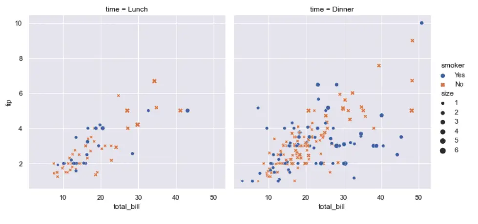

How to Practice Python: Data Science and Pandas
For this week’s How to Practice Python series, I wanted to go over the basics for practicing Python Pandas and other tools in the Python data science stack. This is for those who are new to Python data science and also as a refresher for me, since I’ve been doing more Python for cloud and AWS development lately. However, I’ve been itching to revisit the tools I was working with heavily a few years ago, so I thought I’d share some of the resources I used then and will use again to freshen up my skills in this area.
Core Packages for Python Data Science
In this section, we discuss the packages you’ll need to practice Python data science on your local machine, and what tools those packages also include. However, working online is a reasonable choice as well, since there are many free resources to do this. We discuss some online resources in a later section, but you may want to read through this to learn what the core packages are, even if you don’t install them locally.
If you don’t already have a technique for installing Python packages, a lot of folks get started with something called Anaconda. Personally, I prefer pip and a virtual environment. A core set of packages to get you started consists of JupyterLab, Pandas and Seaborn. Here are a couple of bash aliases I wrote recently that you might find useful.
alias venv='python -m venv .venv && source .venv/bin/activate && \
python -m pip install --upgrade pip'
alias datasci='pip install jupyterlab pandas seaborn'
The resources in the next section go over many of these tools in depth (and we need more resources here that cover them as well) but, very briefly:
JupyterLab allows you to run “jupyter lab” to get a web-based, multi-pane IDE based on Jupyter Notebook. It also includes IPython, a popular advanced Python shell. For a more complete introduction to Jupyter Lab, check out our article
The Pandas package implements the DataFrames object, a two-dimensional table of values that can be used to load, transform, select, and analyze various forms of data sets.
Seaborn is a popular data-visualization library based on Matplotlib (which it also includes). It extends matplotlib by adding themes. In addition, Seaborn also includes several sample pandas data sets you can use to get started. We’ll discuss this briefly below.
Online Tools for Practicing Python Data Science
As an alternative to installing JupyterLab, Pandas, and Seaborn locally, we’ll discuss Kaggle in the context of finding data sets to work with, but Kaggle also supports running Jupyter notebooks online. Some other sites we should mention in this category are CoCalc, which has a free version and a paid upgrade option. CoCalc supports not only Jupyter Notebook, but notebooks running in R or Julia, as well as two open source symbolic math tools, Octave and SageMath.
Another site worth investigating is Google’s CoLab. CoLab notebooks are based on Jupyter, but also feature an interactive table display for DataFrames. Once you’re ready to go beyond “just” using Pandas, CoLab also offers a free 15-hour machine learning crash course that you can work through, as well as other Machine Learning courses.
Books for Python Data Science
Let’s start with what I was doing when I first learned these tools. I was fortunate to learn Pandas directly from the fellow who wrote it (well, from his book, at any rate). Wes McKinney’s Python for Data Analysis: Data Wrangling with Pandas, NumPy, and IPython is a book worth re-reading, and I’ve started doing that this week. This is a great starting place for diving into Python’s data science stack.
Another book I read after McKinney’s – which I really should [buy](http://Python Data Science Handbook: Essential Tools for Working with Data) this time around – is the Python Data Science Handbook, which Jake VanderPlas was good enough to make available in a free online version as well. There’s a fair amount of overlap with McKinney’s book, but it treats both machine learning with scikit-learn and the Seaborn imaging library in greater depth.
A Free Online Pandas Course
Want a quick and easy, four-hour Pandas course with a certificate? Who wouldn’t? Me, apparently – I just looked up the one I was working through four years ago, and it seems I left off at 67%. Wow, talk about your “spaced repetition”. I should finish that. It was a good course. The phone must have rung, or someone came by with dessert.
Kaggle also features many other free courses on various aspects of data science and machine learning.
Sample Data Sets You Can Work With
When I first started learning about data science, I took some Coursera courses in R, and really enjoyed working with it in R-Studio. One feature I really missed when I first started with Python data tools was the lack of built-in data sets like in R. As a software developer, I was used to being able to get started on a project easily.
Code = caffeine + time.
To get even marginally proficient in data analysis, however, I needed some data sets to work with, and I found that the DataFrames that many authors included based on NumPy arrays were less clear than working with real data (even if they were easy to set up).
That’s one of the reasons I like and recommend Seaborn, because it allows you to load a few good sample data sets without much effort at all. This makes exploring Pandas much easier than it would be otherwise.
For example, here is a modified version of the Seaborn Introduction, where we use Seaborn’s load_dataset function to get a small data set showing tips left by diners.
# Import seaborn
import seaborn as sns
# For improved formatting
from IPython.display import HTML
# Load an example seaborn dataset
tips = sns.load_dataset("tips")
# Show a summary of the data
HTML(tips.head().to_html(index=False))
Output:
total_bill |
tip |
sex |
smoker |
day |
time |
size |
|---|---|---|---|---|---|---|
16.99 |
1.01 |
Female |
No |
Sun |
Dinner |
2 |
10.34 |
1.66 |
Male |
No |
Sun |
Dinner |
3 |
21.01 |
3.50 |
Male |
No |
Sun |
Dinner |
3 |
23.68 |
3.31 |
Male |
No |
Sun |
Dinner |
2 |
24.59 |
3.61 |
Female |
No |
Sun |
Dinner |
4 |
244 rows × 7 columns
Plotting this with Seaborn is simple:
# Apply the default theme
sns.set_theme()
# Create a visualization using Seaborn
sns.relplot(
data=tips,
x="total_bill", y="tip", col="time",
hue="smoker", style="smoker", size="size")

As shown above, Seaborn’s load_dataset function takes a name as a string of the dataset you want to load, which is not much help without a list of valid dataset names. For the list of names you can use, you can call get_dataset_names:
import sns
sns.get_dataset_names()
As you load the data sets, they’re downloaded from the Seaborn dataset repository and cached locally.
The ready availability and ease of loading the Seaborn datasets make them a great first step for learning pandas. Once you get beyond that point and want to try your hand at some other data sets, some top resources include:
Data on Kaggle. We’ve already mentioned Kaggle in the context of free courses and running your code online, but Kaggle is a great all-around resource featuring a large, searchable body of datasets. You can also run notebooks online, ask questions in the community, and take part in machine learning competitions.
The Awesome Public Datasets repository is a large, curated list of public data sets, organized by topic.
Government datasets. National, regional, and state governments often have interesting data publically available for the price of a search of “
public datasets”. For example, the United States maintains data.gov for federal level public datasets. Cloud provider datasets. The major cloud providers all provide public datasets. Some of these are large scale and more useful if you’re working with specific cloud technologies, but here for your convenience are the dataset pages for AWS, Google, and Azure.
Google Dataset Search indexes some 25-million publically available datasets. If you’re a data nerd, don’t start searching here if you have something important to do.
Build Your Own Dataset
New datasets and tools for searching them are appearing all the time, and it’s easy to feel a bit overwhelmed or distracted. Also, you might not be interested in “the share of adults who can relate to characters in superhero movies in the United States as of February 2018”. One thing you might try once you’re feeling comfortable with the basics is to work up some data for something meaningful in your life.
In fact, I blame Python and Pandas for moving across country! In 2017, when I was learning Pandas, I was interested in finding locations where there were lots of tech jobs and low housing costs. My wife and I were living in California at the time, which was (and is) a pricey market. My solution was to run queries on a job board for major cities for programming languages I knew to find areas with lots of likely jobs, and merge that with home price data from Zillow to create a custom data set. Some job searches later, my wife and I found ourselves driving a yellow Penske truck with the contents of our apartment from California to North Carolina.
Final Thoughts
Those of us who come to Python from system administration or software development may or not need to master the intricacies of Machine Learning at some point. But short of that, the basic tools of Python data science can be as much fun to learn and experiment with as an automation script, an AWS Lambda function, or a web server. This is a very exciting field, and as I discuss in Why Is Python Popular?, data science is probably the single biggest use case that’s responsible for the #1 position Python finds itself in these days.
As always, if you know of other resources you find helpful for practicing Python or want us to share a cool project with our readers, let us know! I’d love to hear from you.